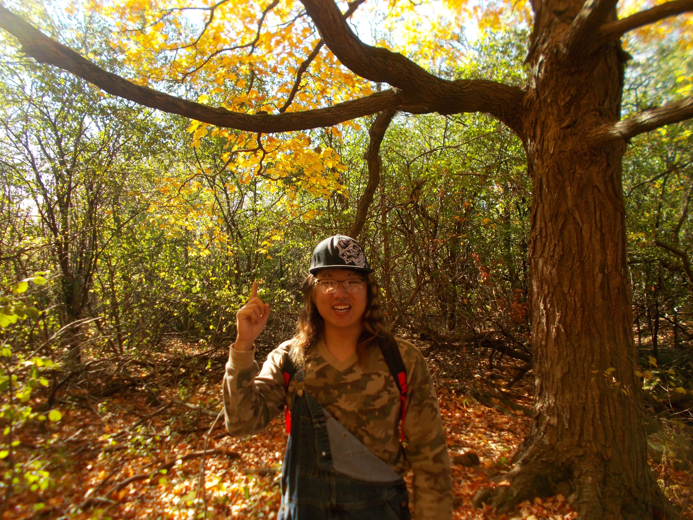
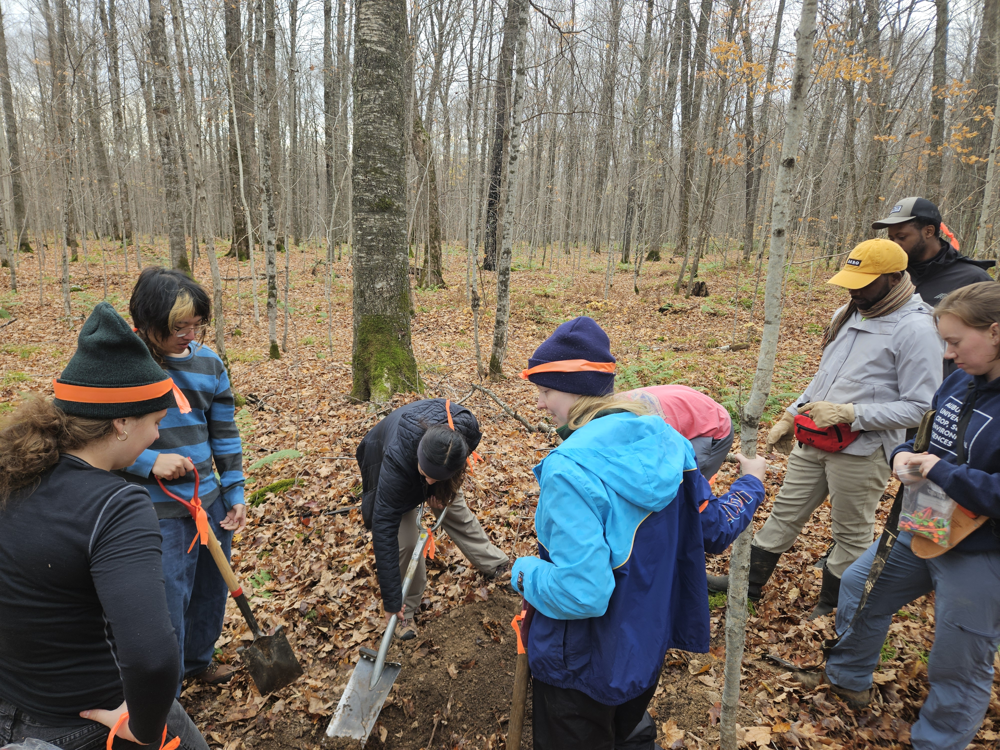
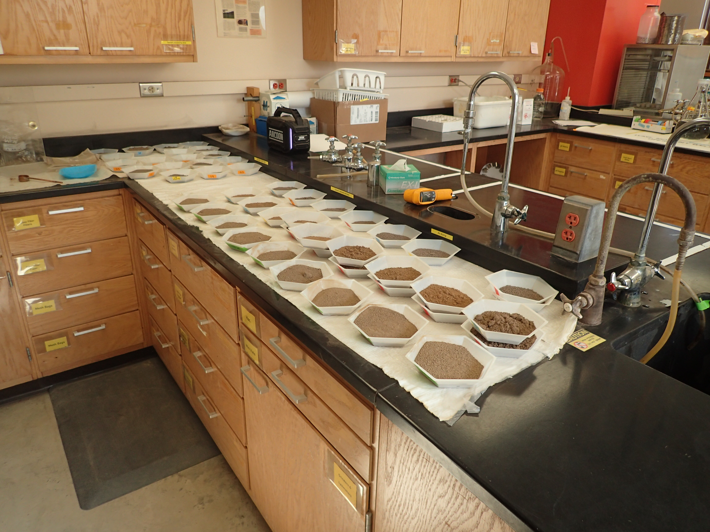

Balster's Lab
Analyzed soil properties through fieldwork and lab techniques, including bulk density and aggregate stability testing.
Soil Ecology Research & Field/Lab Analysis (Madison, WI)
My research focused on understanding how environmental conditions and biological activity influence soil structure and ecosystem processes in forest environments. I worked across both field and laboratory settings to study how factors such as winter snow cover and deer presence affect soil properties.
In the field, I excavated soil pits and document soil horizon profiles to support long-term monitoring and compare soil characteristics across sites. I also collected soil samples and helped install experimental snow-cover structures designed to manipulate winter insulation. These setups allowed us to study how snowpack affects soil temperature, moisture, and cyles of freezing and cycling.
In the lab, I processed and recorded soil samples to measure key physical and chemical properties, including bulk density, compaction, nutrient levels, and organic matter content. I use methods such as loss-on-ignition, soil sieving, wet aggregate stability, and mean weight diameter analysis to evaluate soil structure and stability.
Additionally, I contributed to controlled field experiments examining how deer presence affects soil structure, nutrient cycling and many other properties through grazing disturbances. Additionally, the snow covers helps clarify how interacting factors like winter conditions shape forest soil dynamics and broader processes over time.
Image Gallery

Myself At High Cliff State Park Collecting Compaction Data and Bulk Density Data
Excavating Soil Pits in Order to Analyze Soil Horizons
Forest Panorama

Finished Product After Collecting Mean Weight Diameter Data For Sample Sites